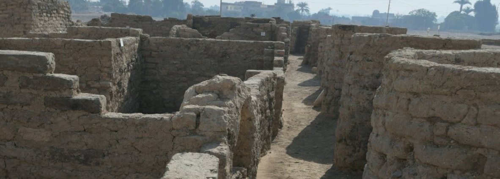

THE NEWS

COVID-19 PANDEMIC
What to Do If You Are Sick
If you are sick with COVID-19 or think you might have COVID-19, follow the steps below to care for yourself and to help protect other people in your home and community.
Stay home except to get medical care;
● Stay home. Most people with COVID-19 have mild illness and can recover at home without medical care. Do not leave your home, except to get medical care. Do not visit public areas.
● Take care of yourself. Get rest and stay hydrated. Take over-the-counter medicines, such as acetaminophen, to help you feel better.
● Stay in touch with your doctor. Call before you get medical care. Be sure to get care if you have trouble breathing, or have any other emergency warning signs, or if you think it is an emergency.
● Avoid public transportation, ride-sharing, or taxis. Separate yourself from other people As much as possible, stay in a specific room and away from other people and pets in your home. If possible, you should use a separate bathroom. If you need to be around other people or animals in or outside of the home, wear a mask.
Tell your close contacts that they may have been exposed to COVID-19. An infected person can spread COVID-19 starting 48 hours (or 2 days) before the person has any symptoms or tests positive. By letting your close contacts know they may have been exposed to COVID-19, you are helping to protect everyone.
●Additional guidance is available for those living in close quarters and shared housing.
●See COVID-19 and Animals if you have questions about pets.
●If you are diagnosed with COVID-19, someone from the health department may call you. Answer the call to slow the spread.
● Stay home. Most people with COVID-19 have mild illness and can recover at home without medical care. Do not leave your home, except to get medical care. Do not visit public areas.
● Take care of yourself. Get rest and stay hydrated. Take over-the-counter medicines, such as acetaminophen, to help you feel better.
● Stay in touch with your doctor. Call before you get medical care. Be sure to get care if you have trouble breathing, or have any other emergency warning signs, or if you think it is an emergency.
● Avoid public transportation, ride-sharing, or taxis. Separate yourself from other people As much as possible, stay in a specific room and away from other people and pets in your home. If possible, you should use a separate bathroom. If you need to be around other people or animals in or outside of the home, wear a mask.
Tell your close contacts that they may have been exposed to COVID-19. An infected person can spread COVID-19 starting 48 hours (or 2 days) before the person has any symptoms or tests positive. By letting your close contacts know they may have been exposed to COVID-19, you are helping to protect everyone.
●Additional guidance is available for those living in close quarters and shared housing.
●See COVID-19 and Animals if you have questions about pets.
●If you are diagnosed with COVID-19, someone from the health department may call you. Answer the call to slow the spread.

'LOST CITY OF GOLD' FOUND IN EGYPT
3 thousand 400 years was discovered the lost golden city
Archaeologists have hailed the discovery of what is believed to be the largest ancient city found in Egypt, buried under sand for millennia, which experts said was one of the most important finds since the unearthing of Tutankhamun’s tomb.
Archaeologists have hailed the discovery of what is believed to be the largest ancient city found in Egypt, buried under sand for millennia, which experts said was one of the most important finds since the unearthing of Tutankhamun’s tomb.
The famed Egyptologist Zahi Hawass announced the discovery of the “lost golden city”, saying the site was uncovered near Luxor, home of the Valley of the Kings.
“The Egyptian mission under Dr Zahi Hawass found the city that was lost under the sands,” the archeology team said. “The city is 3,000 years old, dates to the reign of Amenhotep III, and continued to be used by Tutankhamun and Ay.”
It called the find the largest ancient city, known as Aten, ever uncovered in Egypt.
Betsy Bryan, Professor of Egyptian art and archaeology at Johns Hopkins University, said the find was the “second most important archeological discovery since the tomb of Tutankhamun”, according to the team’s statement.
Items of jewellery such as rings have been unearthed, along with coloured pottery vessels, scarab beetle amulets and mud bricks bearing the seals of Amenhotep III.
Hawass, a former antiquities minister, said:“Many foreign missions searched for this city and never found it.”
The famed Egyptologist Zahi Hawass announced the discovery of the “lost golden city”, saying the site was uncovered near Luxor, home of the Valley of the Kings.
“The Egyptian mission under Dr Zahi Hawass found the city that was lost under the sands,” the archeology team said. “The city is 3,000 years old, dates to the reign of Amenhotep III, and continued to be used by Tutankhamun and Ay.”
It called the find the largest ancient city, known as Aten, ever uncovered in Egypt.
Betsy Bryan, Professor of Egyptian art and archaeology at Johns Hopkins University, said the find was the “second most important archeological discovery since the tomb of Tutankhamun”, according to the team’s statement.
Items of jewellery such as rings have been unearthed, along with coloured pottery vessels, scarab beetle amulets and mud bricks bearing the seals of Amenhotep III.
Hawass, a former antiquities minister, said:“Many foreign missions searched for this city and never found it.”
Google Earth's timelapse feature puts a spotlight on climate change
Google Earth on Thursday added a timelapse feature to the popular platform, providing a glimpse into how climate change, urbanization and deforestation have altered the planet over the last four decades.
Created with 24 million satellite images, along with 800 curated videos and interactive guides, the feature allows users to see a timelapse of any place on the planet, using inputs from the NASA, U.S. Geological Survey's Landsat program and the European Union's Copernicus program.
Climate change is causing more frequent and severe flooding, droughts, storms and heatwaves as average global temperatures rise to new records.
Google Earth's timelapse tool shows the change in coastlines, sprawling expansion of cityscapes and agricultural lands, as well as simultaneous recession of glaciers, forests and rivers.
One video shows rapid transition of forests near Bolivia into villages and farms, a major cause for deforestation in the Amazon rainforest; while another shows the recession of the Columbia Glacier in Alaska by 20 kilometers due to global warming.
Scientists have warned that a rise in global emissions of greenhouse gases may lead to extreme weather conditions and higher risks from natural disasters.
Created with 24 million satellite images, along with 800 curated videos and interactive guides, the feature allows users to see a timelapse of any place on the planet, using inputs from the NASA, U.S. Geological Survey's Landsat program and the European Union's Copernicus program.
Climate change is causing more frequent and severe flooding, droughts, storms and heatwaves as average global temperatures rise to new records.
Google Earth's timelapse tool shows the change in coastlines, sprawling expansion of cityscapes and agricultural lands, as well as simultaneous recession of glaciers, forests and rivers.
One video shows rapid transition of forests near Bolivia into villages and farms, a major cause for deforestation in the Amazon rainforest; while another shows the recession of the Columbia Glacier in Alaska by 20 kilometers due to global warming.
Scientists have warned that a rise in global emissions of greenhouse gases may lead to extreme weather conditions and higher risks from natural disasters.